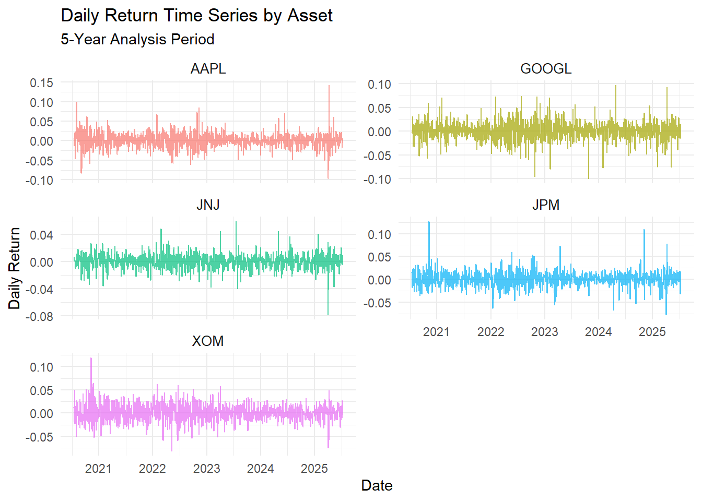
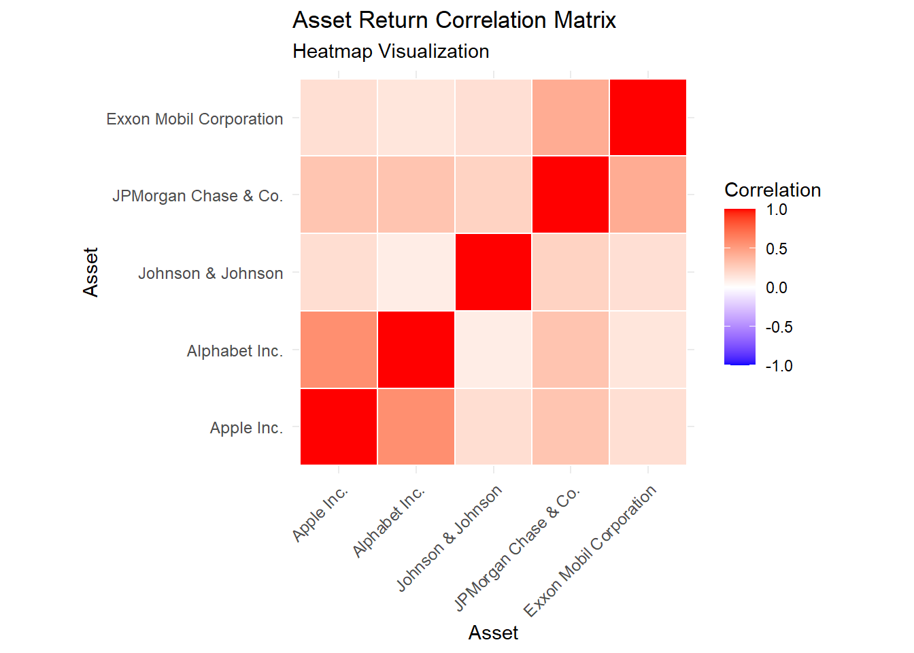
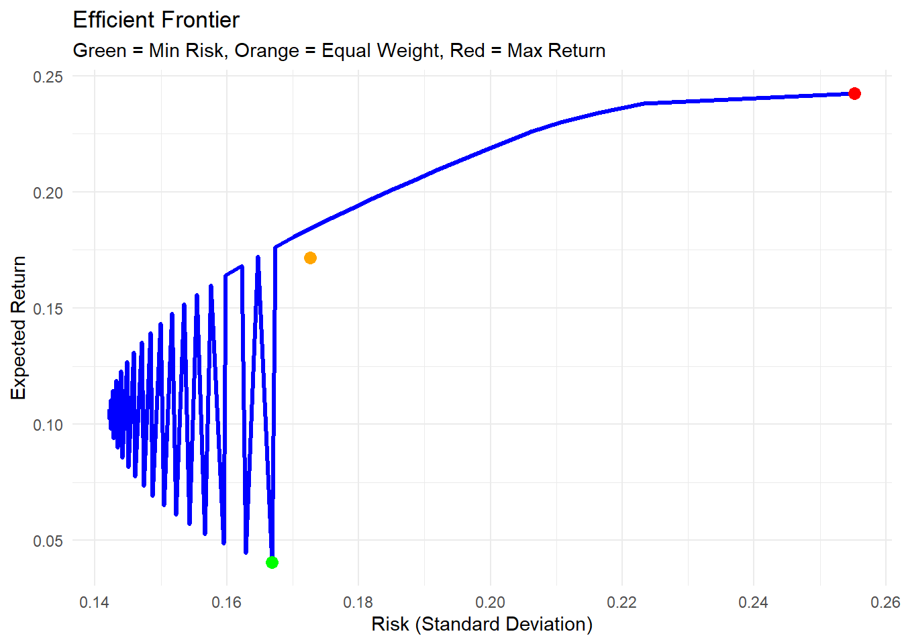
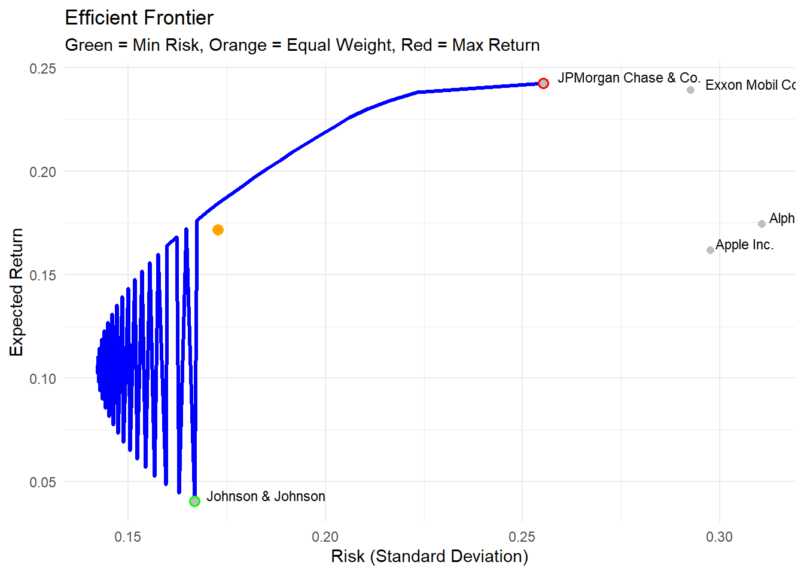

# Load required libraries for financial analysis
library(quantmod) # Financial data acquisition and manipulation
library(PerformanceAnalytics) # Portfolio performance analytics
library(quadprog) # Quadratic programming optimization
library(tidyverse) # Data manipulation and visualization
library(knitr) # Dynamic report generation
library(plotly) # Interactive data visualization
# Configure global options for numerical precision
options(digits = 4, scipen = 999)Portfolio Optimization: A Simple Guide to Mean Variance Analysis
finance
portfolio optimization
mean variance
risk management
R
A beginner-friendly guide to portfolio optimization using Mean Variance Analysis in R. Learn how to build optimal portfolios that balance risk and return.
Portfolio Optimization: A Simple Guide to Mean Variance Analysis
What You’ll Learn
This comprehensive guide covers everything about portfolio optimization:
- Fundamentals: What is portfolio optimization and why it matters
- Theory: Understanding risk, return, and diversification
- Implementation: Step-by-step R code with real stock data
- Practical Examples: Building optimal portfolios
- Limitations: What to watch out for in real-world applications
Introduction
Portfolio optimization addresses a fundamental challenge in financial economics: how to allocate capital across multiple assets to achieve optimal risk-return characteristics. The central question involves determining the appropriate weights for each asset in a portfolio to either maximize expected return for a given level of risk or minimize risk for a targeted return level.
The diversification principle suggests that investing in a single asset exposes investors to unnecessary idiosyncratic risk, whereas spreading investments across multiple assets can reduce overall portfolio volatility without proportionally reducing expected returns.
This article examines Mean Variance Optimization (MVO), the foundational framework developed by Harry Markowitz in 1952, which earned him the Nobel Prize in Economic Sciences in 1990. We provide theoretical foundations, mathematical formulations, and practical implementation using R programming language.
Portfolio Optimization: Theoretical Framework
Portfolio optimization is the systematic process of selecting optimal asset weights to construct portfolios that satisfy specific investment objectives under given constraints. The optimization process seeks to balance the trade-off between expected return and risk through mathematical modeling.
Fundamental Concepts:
- Portfolio: A collection of financial assets (securities, bonds, derivatives) held by an investor
- Expected Return: The anticipated return on an investment based on historical data or forward-looking estimates
- Risk: The degree of uncertainty associated with investment returns, typically measured by volatility
- Optimization: The mathematical process of finding optimal asset allocation weights
The theoretical foundation rests on the principle that rational investors prefer higher returns for any given level of risk, and lower risk for any given level of expected return. Portfolio construction therefore involves finding combinations that lie on the efficient frontier of this risk-return space.
Risk and Return Analysis
Understanding the relationship between risk and return forms the cornerstone of modern portfolio theory. These concepts require precise definition and measurement for effective portfolio construction.
Expected Return
Expected return represents the anticipated performance of an asset or portfolio over a specified time horizon. It can be calculated using historical data or forward-looking projections.
Mathematical Definition: For an asset with historical returns \(R_1, R_2, ..., R_T\), the expected return is: \[E[R] = \frac{1}{T}\sum_{t=1}^{T} R_t\]
Return Classifications: - Historical Return: Calculated from past price movements - Expected Return: Forward-looking estimate based on various methodologies
Risk Measurement
Risk quantifies the uncertainty surrounding investment outcomes, typically measured through volatility metrics.
Volatility (Standard Deviation): \[\sigma = \sqrt{\frac{1}{T-1}\sum_{t=1}^{T}(R_t - E[R])^2}\]
Risk Categories: - Systematic Risk: Market-wide risk that cannot be diversified away - Unsystematic Risk: Asset-specific risk that can be reduced through diversification
The Risk-Return Trade-off
Financial theory establishes that higher expected returns generally require accepting higher levels of risk. This fundamental relationship drives portfolio optimization decisions and forms the basis for asset pricing models.
Mean Variance Optimization Framework
Mean Variance Optimization (MVO) provides a mathematical framework for constructing portfolios that optimize the risk-return trade-off. The methodology considers expected returns, variances, and covariances of assets to determine optimal allocation weights.
Mathematical Formulation:
For a portfolio with weights \(w = (w_1, w_2, ..., w_n)\) and expected returns \(\mu = (\mu_1, \mu_2, ..., \mu_n)\):
- Portfolio Expected Return: \(E[R_p] = w^T\mu\)
- Portfolio Variance: \(\sigma_p^2 = w^T\Sigma w\)
- Portfolio Standard Deviation: \(\sigma_p = \sqrt{w^T\Sigma w}\)
Where \(\Sigma\) represents the covariance matrix of asset returns.
Optimization Objectives:
- Risk Minimization: Minimize \(\sigma_p^2\) subject to \(w^T\mu = \mu_p\) (target return)
- Return Maximization: Maximize \(w^T\mu\) subject to \(w^T\Sigma w = \sigma_p^2\) (target risk)
- Utility Maximization: Maximize \(w^T\mu - \frac{\gamma}{2}w^T\Sigma w\) (risk-adjusted return)
The Efficient Frontier:
The efficient frontier represents the set of portfolios that offer the highest expected return for each level of risk, or equivalently, the lowest risk for each level of expected return. Mathematically, it forms the upper boundary of the feasible risk-return space.
Theoretical Assumptions
Mean Variance Optimization operates under several key assumptions that define its scope of applicability and limitations:
1. Rational Investor Behavior
Assumption: Investors exhibit risk-averse preferences and seek to maximize expected utility. Implication: Investors require higher expected returns to compensate for additional risk.
2. Normal Distribution of Returns
Assumption: Asset returns follow a multivariate normal distribution. Implication: Portfolio returns are completely characterized by mean and variance parameters.
3. Mean-Variance Preferences
Assumption: Investor utility functions depend solely on portfolio mean and variance. Implication: Higher-order moments (skewness, kurtosis) are not considered in optimization.
4. Single-Period Framework
Assumption: Portfolio optimization occurs over a single investment horizon. Implication: Dynamic rebalancing and multi-period considerations are excluded.
5. Frictionless Markets
Assumption: Markets operate without transaction costs, taxes, or liquidity constraints. Implication: Continuous rebalancing is costless and feasible.
6. Homogeneous Expectations
Assumption: All investors share identical beliefs about asset return distributions. Implication: Market equilibrium can be characterized by a single efficient frontier.
Empirical Implementation
This section demonstrates the practical application of Mean Variance Optimization using real financial data. We employ R programming to implement the theoretical framework and construct optimal portfolios.
1. Environment Configuration
The implementation requires several specialized R packages for financial data analysis and optimization procedures.
2. Data Acquisition and Preprocessing
We construct a diversified portfolio using equity securities from different economic sectors to demonstrate the principles of diversification and correlation effects.
# Define asset universe: diversified equity portfolio
tickers <- c("AAPL", "GOOGL", "JNJ", "JPM", "XOM")
company_names <- c("Apple Inc.", "Alphabet Inc.", "Johnson & Johnson",
"JPMorgan Chase & Co.", "Exxon Mobil Corporation")
# Define analysis period: 5-year historical window
analysis_start <- Sys.Date() - 365*5
analysis_end <- Sys.Date()
# Retrieve adjusted closing prices from Yahoo Finance
price_data <- list()
for(i in seq_along(tickers)) {
price_data[[tickers[i]]] <- getSymbols(tickers[i],
src = "yahoo",
from = analysis_start,
to = analysis_end,
auto.assign = FALSE)
}
# Extract adjusted closing prices and construct price matrix
prices <- data.frame(date = index(price_data[[1]]))
for(i in seq_along(tickers)) {
prices[tickers[i]] <- as.numeric(Ad(price_data[[tickers[i]]]))
}
# Display data summary
head(prices) |> kable(caption = "Sample of Historical Price Data")| date | AAPL | GOOGL | JNJ | JPM | XOM |
|---|---|---|---|---|---|
| 2020-07-14 | 94.35 | 75.59 | 128.3 | 85.88 | 35.12 |
| 2020-07-15 | 95.00 | 75.39 | 128.6 | 87.21 | 35.56 |
| 2020-07-16 | 93.83 | 75.29 | 129.5 | 87.45 | 35.28 |
| 2020-07-17 | 93.64 | 75.39 | 129.6 | 85.83 | 34.68 |
| 2020-07-20 | 95.61 | 77.73 | 129.8 | 85.08 | 33.86 |
| 2020-07-21 | 94.29 | 77.33 | 129.9 | 86.93 | 35.58 |
# Dataset characteristics
cat("Analysis Period:", format(min(prices$date), "%Y-%m-%d"), "to",
format(max(prices$date), "%Y-%m-%d"), "\n")Analysis Period: 2020-07-14 to 2025-07-11 cat("Total Observations:", nrow(prices), "\n")Total Observations: 1255 cat("Assets in Universe:", length(tickers), "\n")Assets in Universe: 5 3. Return Calculation and Statistical Analysis
Portfolio optimization requires return data rather than price levels. We calculate logarithmic returns and compute relevant statistical measures.
# Calculate logarithmic returns
returns <- prices |>
select(-date) |>
mutate(across(everything(), ~ c(NA, diff(log(.))))) |> # Log returns
na.omit()
# Convert to matrix format for mathematical operations
returns_matrix <- as.matrix(returns)
# Compute descriptive statistics (annualized)
descriptive_stats <- data.frame(
Asset = company_names,
Ticker = tickers,
Mean_Return = round(colMeans(returns) * 252, 4), # Annualized mean
Volatility = round(apply(returns, 2, sd) * sqrt(252), 4), # Annualized volatility
Minimum = round(apply(returns, 2, min), 4), # Minimum daily return
Maximum = round(apply(returns, 2, max), 4) # Maximum daily return
)
kable(descriptive_stats,
caption = "Asset Return Statistics (Annualized Measures)",
col.names = c("Company", "Ticker", "Mean Return", "Volatility",
"Min Return", "Max Return"))| Company | Ticker | Mean Return | Volatility | Min Return | Max Return | |
|---|---|---|---|---|---|---|
| AAPL | Apple Inc. | AAPL | 0.1619 | 0.2975 | -0.0970 | 0.1426 |
| GOOGL | Alphabet Inc. | GOOGL | 0.1746 | 0.3107 | -0.0999 | 0.0973 |
| JNJ | Johnson & Johnson | JNJ | 0.0404 | 0.1668 | -0.0790 | 0.0590 |
| JPM | JPMorgan Chase & Co. | JPM | 0.2424 | 0.2553 | -0.0778 | 0.1270 |
| XOM | Exxon Mobil Corporation | XOM | 0.2391 | 0.2926 | -0.0821 | 0.1192 |
Time series of daily returns for selected assets
# Visualize return time series
returns_long <- returns |>
mutate(date = prices$date[-1]) |>
pivot_longer(cols = -date, names_to = "asset", values_to = "return")
p1 <- ggplot(returns_long, aes(x = date, y = return, color = asset)) +
geom_line(alpha = 0.7, size = 0.5) +
facet_wrap(~asset, scales = "free_y", nrow = 3) +
labs(title = "Daily Return Time Series by Asset",
subtitle = "5-Year Analysis Period",
x = "Date", y = "Daily Return") +
theme_minimal() +
theme(legend.position = "none",
strip.text = element_text(size = 10))
print(p1)
4. Correlation Structure Analysis
Correlation analysis reveals the degree of linear dependence between asset returns, which directly impacts diversification benefits and optimal portfolio weights.
# Compute empirical correlation matrix
correlation_matrix <- cor(returns)
# Format correlation matrix for presentation
correlation_display <- correlation_matrix
colnames(correlation_display) <- company_names
rownames(correlation_display) <- company_names
kable(correlation_display,
caption = "Pairwise Correlation Matrix of Asset Returns",
digits = 3)| Apple Inc. | Alphabet Inc. | Johnson & Johnson | JPMorgan Chase & Co. | Exxon Mobil Corporation | |
|---|---|---|---|---|---|
| Apple Inc. | 1.000 | 0.573 | 0.175 | 0.303 | 0.170 |
| Alphabet Inc. | 0.573 | 1.000 | 0.097 | 0.308 | 0.133 |
| Johnson & Johnson | 0.175 | 0.097 | 1.000 | 0.231 | 0.165 |
| JPMorgan Chase & Co. | 0.303 | 0.308 | 0.231 | 1.000 | 0.428 |
| Exxon Mobil Corporation | 0.170 | 0.133 | 0.165 | 0.428 | 1.000 |
Asset correlation matrix and heatmap visualization
# Prepare data for correlation heatmap
correlation_long <- correlation_matrix |>
as.data.frame() |>
rownames_to_column("asset1") |>
pivot_longer(cols = -asset1, names_to = "asset2", values_to = "correlation") |>
mutate(
asset1 = factor(asset1, levels = tickers, labels = company_names),
asset2 = factor(asset2, levels = tickers, labels = company_names)
)
# Generate correlation heatmap
p2 <- ggplot(correlation_long, aes(x = asset1, y = asset2, fill = correlation)) +
geom_tile(color = "white", size = 0.5) +
scale_fill_gradient2(low = "blue", mid = "white", high = "red",
midpoint = 0, limits = c(-1, 1)) +
labs(title = "Asset Return Correlation Matrix",
subtitle = "Heatmap Visualization",
x = "Asset", y = "Asset", fill = "Correlation") +
theme_minimal() +
theme(axis.text.x = element_text(angle = 45, hjust = 1, size = 9),
axis.text.y = element_text(size = 9),
legend.position = "right") +
coord_fixed()
print(p2)
# Calculate and display diversification metrics
mean_correlation <- mean(correlation_matrix[upper.tri(correlation_matrix)])
max_correlation <- max(correlation_matrix[upper.tri(correlation_matrix)])
min_correlation <- min(correlation_matrix[upper.tri(correlation_matrix)])
cat("Correlation Analysis Summary:\n")Correlation Analysis Summary:cat("Mean Pairwise Correlation:", round(mean_correlation, 3), "\n")Mean Pairwise Correlation: 0.258 cat("Maximum Correlation:", round(max_correlation, 3), "\n")Maximum Correlation: 0.573 cat("Minimum Correlation:", round(min_correlation, 3), "\n")Minimum Correlation: 0.097 5. Optimization Algorithm Implementation
We implement the quadratic programming solution to the mean-variance optimization problem using the standard mathematical formulation.
# Calculate optimization inputs
mu <- colMeans(returns) * 252 # Annualized expected returns vector
Sigma <- cov(returns) * 252 # Annualized covariance matrix
n_assets <- length(mu) # Number of assets in universe
# Define portfolio optimization function
optimize_portfolio <- function(target_return = NULL, risk_aversion = NULL) {
# Constraint matrices: weights sum to 1, non-negativity constraints
A_equality <- matrix(rep(1, n_assets), nrow = 1) # Budget constraint
A_inequality <- diag(n_assets) # Non-negativity constraints
Amat <- rbind(A_equality, A_inequality)
bvec <- c(1, rep(0, n_assets))
if (!is.null(target_return)) {
# Minimize variance subject to target return constraint
A_return <- matrix(mu, nrow = 1)
Amat <- rbind(A_return, Amat)
bvec <- c(target_return, bvec)
# Solve quadratic programming problem: min(1/2 * w'Qw) s.t. Aw >= b
solution <- solve.QP(Dmat = 2*Sigma, dvec = rep(0, n_assets),
Amat = t(Amat), bvec = bvec, meq = 2)
} else if (!is.null(risk_aversion)) {
# Maximize utility: E[r] - (γ/2)σ²
dvec <- mu
solution <- solve.QP(Dmat = risk_aversion * Sigma, dvec = dvec,
Amat = t(Amat), bvec = bvec, meq = 1)
}
# Extract optimal weights
weights <- solution$solution
names(weights) <- tickers
# Calculate portfolio performance metrics
portfolio_return <- sum(weights * mu)
portfolio_variance <- as.numeric(t(weights) %*% Sigma %*% weights)
portfolio_volatility <- sqrt(portfolio_variance)
sharpe_ratio <- portfolio_return / portfolio_volatility
return(list(
weights = weights,
expected_return = portfolio_return,
volatility = portfolio_volatility,
sharpe_ratio = sharpe_ratio,
variance = portfolio_variance
))
}
cat("Portfolio optimization algorithm successfully implemented.\n")Portfolio optimization algorithm successfully implemented.cat("Available optimization modes: target return, risk aversion parameter.\n")Available optimization modes: target return, risk aversion parameter.6. Finding Optimal Portfolios
Let’s find some interesting portfolios: minimum risk, maximum Sharpe ratio, and equal weight.
# 1. Minimum Risk Portfolio
min_risk_port <- optimize_portfolio(target_return = min(mu))
# 2. Maximum Return Portfolio (single asset)
max_return_idx <- which.max(mu)
max_return_port <- list(
weights = rep(0, n_assets),
expected_return = mu[max_return_idx],
volatility = sqrt(Sigma[max_return_idx, max_return_idx])
)
max_return_port$weights[max_return_idx] <- 1
names(max_return_port$weights) <- tickers
max_return_port$sharpe_ratio <- max_return_port$expected_return / max_return_port$volatility
# 3. Equal Weight Portfolio
equal_weight_port <- list(
weights = rep(1/n_assets, n_assets),
expected_return = sum(mu/n_assets),
volatility = sqrt(t(rep(1/n_assets, n_assets)) %*% Sigma %*% rep(1/n_assets, n_assets))
)
names(equal_weight_port$weights) <- tickers
equal_weight_port$sharpe_ratio <- equal_weight_port$expected_return / as.numeric(equal_weight_port$volatility)
# Create comparison table
portfolio_comparison <- data.frame(
Portfolio = c("Minimum Risk", "Maximum Return", "Equal Weight"),
Expected_Return = c(min_risk_port$expected_return, max_return_port$expected_return, equal_weight_port$expected_return),
Risk = c(min_risk_port$volatility, max_return_port$volatility, as.numeric(equal_weight_port$volatility)),
Sharpe_Ratio = c(min_risk_port$sharpe_ratio, max_return_port$sharpe_ratio, equal_weight_port$sharpe_ratio)
)
kable(portfolio_comparison,
caption = "Comparison of Different Portfolio Strategies",
digits = 4)| Portfolio | Expected_Return | Risk | Sharpe_Ratio |
|---|---|---|---|
| Minimum Risk | 0.0404 | 0.1668 | 0.2420 |
| Maximum Return | 0.2424 | 0.2553 | 0.9495 |
| Equal Weight | 0.1717 | 0.1727 | 0.9941 |
# Show portfolio weights
weights_comparison <- data.frame(
Stock = company_names,
Min_Risk = round(min_risk_port$weights, 3),
Max_Return = round(max_return_port$weights, 3),
Equal_Weight = round(equal_weight_port$weights, 3)
)
kable(weights_comparison,
caption = "Portfolio Weights for Different Strategies")| Stock | Min_Risk | Max_Return | Equal_Weight | |
|---|---|---|---|---|
| AAPL | Apple Inc. | 0 | 0 | 0.2 |
| GOOGL | Alphabet Inc. | 0 | 0 | 0.2 |
| JNJ | Johnson & Johnson | 1 | 0 | 0.2 |
| JPM | JPMorgan Chase & Co. | 0 | 1 | 0.2 |
| XOM | Exxon Mobil Corporation | 0 | 0 | 0.2 |
7. Creating the Efficient Frontier
The efficient frontier shows all optimal portfolios with different risk-return combinations.
# Generate efficient frontier
target_returns <- seq(min(mu), max(mu), length.out = 50)
efficient_portfolios <- list()
for(i in 1:length(target_returns)) {
tryCatch({
port <- optimize_portfolio(target_return = target_returns[i])
efficient_portfolios[[i]] <- data.frame(
return = port$expected_return,
risk = port$volatility,
sharpe = port$sharpe_ratio
)
}, error = function(e) {
efficient_portfolios[[i]] <- NULL
})
}
# Combine results
efficient_frontier_data <- do.call(rbind, efficient_portfolios)
# Plot efficient frontier
p3 <- ggplot() +
geom_line(data = efficient_frontier_data,
aes(x = risk, y = return),
color = "blue", size = 1.2) +
geom_point(aes(x = min_risk_port$volatility, y = min_risk_port$expected_return),
color = "green", size = 3) +
geom_point(aes(x = as.numeric(equal_weight_port$volatility), y = equal_weight_port$expected_return),
color = "orange", size = 3) +
geom_point(aes(x = max_return_port$volatility, y = max_return_port$expected_return),
color = "red", size = 3) +
labs(title = "Efficient Frontier",
subtitle = "Green = Min Risk, Orange = Equal Weight, Red = Max Return",
x = "Risk (Standard Deviation)",
y = "Expected Return") +
theme_minimal()
print(p3)
# Add individual stock points
individual_stocks <- data.frame(
stock = company_names,
return = mu,
risk = sqrt(diag(Sigma))
)
p4 <- p3 +
geom_point(data = individual_stocks,
aes(x = risk, y = return),
color = "gray", size = 2) +
geom_text(data = individual_stocks,
aes(x = risk, y = return, label = stock),
hjust = -0.1, vjust = -0.1, size = 3)
print(p4)
Practical Example: Building Your Portfolio
Let’s say you want to invest $10,000 with moderate risk tolerance. Here’s how to determine your optimal portfolio:
# Let's find a portfolio with moderate risk (between min and max)
target_risk <- 0.15 # 15% annual volatility
# Find portfolio closest to target risk
risk_differences <- abs(efficient_frontier_data$risk - target_risk)
best_idx <- which.min(risk_differences)
moderate_target_return <- efficient_frontier_data$return[best_idx]
moderate_portfolio <- optimize_portfolio(target_return = moderate_target_return)
# Calculate dollar amounts for $10,000 investment
investment_amount <- 10000
dollar_allocation <- moderate_portfolio$weights * investment_amount
allocation_table <- data.frame(
Company = company_names,
Symbol = tickers,
Weight = paste0(round(moderate_portfolio$weights * 100, 1), "%"),
Dollar_Amount = paste0("$", round(dollar_allocation, 0))
)
kable(allocation_table,
caption = "Your Optimal Portfolio Allocation ($10,000 Investment)",
col.names = c("Company", "Symbol", "Weight", "Dollar Amount"))| Company | Symbol | Weight | Dollar Amount |
|---|---|---|---|
| Apple Inc. | AAPL | 7.1% | $706 |
| Alphabet Inc. | GOOGL | 11.5% | $1146 |
| Johnson & Johnson | JNJ | 42% | $4203 |
| JPMorgan Chase & Co. | JPM | 21.4% | $2144 |
| Exxon Mobil Corporation | XOM | 18% | $1800 |
cat("Portfolio Statistics:\n")Portfolio Statistics:cat("Expected Annual Return:", round(moderate_portfolio$expected_return * 100, 2), "%\n")Expected Annual Return: 14.34 %cat("Expected Annual Risk:", round(moderate_portfolio$volatility * 100, 2), "%\n")Expected Annual Risk: 15 %cat("Sharpe Ratio:", round(moderate_portfolio$sharpe_ratio, 3), "\n")Sharpe Ratio: 0.956 Advantages of Mean Variance Optimization
Mean Variance Optimization offers several significant advantages that have established it as the foundation of modern portfolio theory:
1. Mathematical Rigor and Theoretical Foundation
- Provides a mathematically sound framework for portfolio construction
- Based on axiomatic utility theory and rational choice principles
- Offers closed-form solutions through quadratic programming
- Recognized with the 1990 Nobel Prize in Economic Sciences
2. Systematic Risk Management
- Explicitly incorporates correlation structures between assets
- Quantifies diversification benefits through mathematical optimization
- Provides optimal trade-off between risk and expected return
- Enables precise measurement of portfolio risk characteristics
3. Flexibility and Customization
- Accommodates various investor preferences through utility functions
- Supports multiple optimization objectives (risk minimization, return maximization)
- Allows incorporation of investment constraints and preferences
- Scalable to portfolios of any size or complexity
4. Empirical and Practical Applications
- Serves as foundation for Capital Asset Pricing Model (CAPM)
- Enables construction of efficient frontiers for investment analysis
- Provides benchmark for portfolio performance evaluation
- Supports asset allocation decisions across institutional and retail contexts
Limitations and Critical Assessment
Despite its theoretical elegance and practical utility, Mean Variance Optimization faces several important limitations that affect its real-world application:
1. Parameter Estimation Risk
Problem: Optimal portfolios are highly sensitive to input parameters (expected returns, volatilities, correlations). Academic Evidence: Small estimation errors can lead to substantially different portfolio compositions. Mitigation Strategies: Robust optimization techniques, Bayesian approaches, confidence intervals around estimates.
2. Input Sensitivity and Instability
Problem: Minor changes in expected return estimates can result in dramatically different optimal allocations. Practical Impact: Portfolio turnover becomes excessive, leading to high transaction costs. Solutions: Regularization methods, constrained optimization, resampling techniques.
3. Concentration Risk
Problem: Unconstrained optimization often produces portfolios with extreme position weights. Theoretical Basis: Optimizer exploits small differences in expected returns to generate concentrated positions. Practical Solutions: Position limits, diversification constraints, risk budgeting approaches.
4. Distributional Assumptions
Problem: Normal distribution assumption fails to capture tail risks and extreme market events. Empirical Evidence: Financial returns exhibit fat tails, skewness, and time-varying volatility. Alternative Approaches: Conditional Value-at-Risk (CVaR), higher-moment optimization, regime-switching models.
5. Single-Period Limitation
Problem: Framework assumes static single-period investment horizon. Reality: Investors face multi-period investment decisions with changing opportunity sets. Extensions: Dynamic programming, stochastic control theory, multi-period mean-variance models.
6. Market Frictions
Problem: Model ignores transaction costs, taxes, liquidity constraints, and market impact. Practical Significance: Trading costs can exceed optimization benefits, particularly for high-turnover strategies. Implementation Solutions: Transaction cost models, turnover constraints, liquidity-adjusted optimization.
Improving Mean Variance Optimization
Here are some practical ways to make Mean Variance Optimization more robust:
# 1. Add constraints to prevent extreme allocations
optimize_portfolio_constrained <- function(target_return, min_weight = 0.05, max_weight = 0.4) {
# Enhanced constraints
Amat <- rbind(
rep(1, n_assets), # weights sum to 1
mu, # target return constraint
diag(n_assets), # weights >= min_weight
-diag(n_assets) # weights <= max_weight
)
bvec <- c(1, target_return, rep(min_weight, n_assets), rep(-max_weight, n_assets))
solution <- solve.QP(Dmat = 2*Sigma, dvec = rep(0, n_assets),
Amat = t(Amat), bvec = bvec, meq = 2)
weights <- solution$solution
names(weights) <- tickers
port_return <- sum(weights * mu)
port_risk <- sqrt(t(weights) %*% Sigma %*% weights)
return(list(
weights = weights,
expected_return = port_return,
volatility = as.numeric(port_risk),
sharpe_ratio = port_return / as.numeric(port_risk)
))
}
# Compare constrained vs unconstrained
unconstrained <- optimize_portfolio(target_return = moderate_target_return)
constrained <- optimize_portfolio_constrained(target_return = moderate_target_return)
comparison <- data.frame(
Approach = c("Unconstrained", "Constrained"),
Return = c(unconstrained$expected_return, constrained$expected_return),
Risk = c(unconstrained$volatility, constrained$volatility),
Sharpe = c(unconstrained$sharpe_ratio, constrained$sharpe_ratio),
Max_Weight = c(max(unconstrained$weights), max(constrained$weights)),
Min_Weight = c(min(unconstrained$weights), min(constrained$weights))
)
kable(comparison,
caption = "Comparison: Constrained vs Unconstrained Optimization",
digits = 4)| Approach | Return | Risk | Sharpe | Max_Weight | Min_Weight |
|---|---|---|---|---|---|
| Unconstrained | 0.1434 | 0.1500 | 0.9564 | 0.4203 | 0.0706 |
| Constrained | 0.1434 | 0.1507 | 0.9520 | 0.4000 | 0.1092 |
Best Practices for Practical Implementation
1. Robust Parameter Estimation
- Employ multiple estimation methodologies rather than relying solely on historical averages
- Incorporate forward-looking information from analyst forecasts and economic models
- Utilize shrinkage estimators and Bayesian approaches to improve parameter stability
- Implement Black-Litterman methodology to combine market equilibrium with investor views
2. Portfolio Rebalancing Strategy
- Establish systematic rebalancing schedules (quarterly, semi-annually) based on institutional constraints
- Monitor drift from target allocations and implement threshold-based rebalancing rules
- Account for transaction costs and tax implications in rebalancing decisions
- Consider regime changes and structural breaks in market conditions
3. Risk Management and Stress Testing
- Conduct scenario analysis and stress testing under extreme market conditions
- Implement Monte Carlo simulations to assess portfolio robustness
- Evaluate portfolio performance during historical crisis periods
- Monitor factor exposures and concentration risks continuously
4. Implementation Considerations
- Begin with broad asset class allocation before proceeding to individual security selection
- Implement position limits and diversification constraints to prevent excessive concentration
- Account for implementation costs including bid-ask spreads, market impact, and custody fees
- Consider investment vehicle efficiency (ETFs, index funds) versus direct security holdings
5. Institutional and Regulatory Constraints
- Incorporate investment policy constraints and regulatory requirements
- Consider liability matching for institutional investors (pension funds, insurance companies)
- Account for liquidity requirements and redemption patterns
- Evaluate ESG (Environmental, Social, Governance) constraints and preferences
Summary and Conclusions
Key Research Findings
Theoretical Foundation: Mean Variance Optimization provides a rigorous mathematical framework for portfolio construction based on expected utility maximization
Empirical Application: The methodology successfully identifies efficient portfolios that optimize the risk-return trade-off within the constraints of available data
Diversification Benefits: Mathematical optimization quantifies and captures correlation-based diversification effects that reduce portfolio risk
Implementation Challenges: Parameter sensitivity and estimation risk represent significant practical limitations requiring robust mitigation strategies
Risk Management Integration: Optimal portfolio construction must incorporate realistic constraints, transaction costs, and ongoing risk monitoring
Academic and Practical Relevance: Despite limitations, MVO remains the foundation for modern portfolio theory and continues to inform institutional investment practices
Mean Variance Optimization represents a fundamental breakthrough in quantitative finance, providing the theoretical foundation for modern portfolio management. While practical implementation requires careful attention to parameter estimation, constraints, and market frictions, the framework continues to serve as the cornerstone of systematic investment management.
The methodology’s enduring influence stems from its mathematical rigor and practical applicability across diverse investment contexts. Students and practitioners should understand both the theoretical elegance and practical limitations of the approach, using it as a starting point for more sophisticated portfolio construction methodologies.
References and Further Reading
Foundational Academic Literature
- Markowitz, H. (1952). “Portfolio Selection.” Journal of Finance, 7(1), 77-91. [Seminal paper introducing mean-variance optimization]
- Sharpe, W. F. (1964). “Capital Asset Prices: A Theory of Market Equilibrium under Conditions of Risk.” Journal of Finance, 19(3), 425-442. [Development of CAPM based on Markowitz framework]
- Black, F., & Litterman, R. (1992). “Global Portfolio Optimization.” Financial Analysts Journal, 48(5), 28-43. [Bayesian approach to parameter estimation]
Advanced Theoretical Developments
- Merton, R. C. (1972). “An Analytic Derivation of the Efficient Portfolio Frontier.” Journal of Financial and Quantitative Analysis, 7(4), 1851-1872.
- Jobson, J. D., & Korkie, B. (1980). “Estimation for Markowitz Efficient Portfolios.” Journal of the American Statistical Association, 75(371), 544-554.
- Michaud, R. O. (1989). “The Markowitz Optimization Enigma: Is ‘Optimized’ Optimal?” Financial Analysts Journal, 45(1), 31-42.
Contemporary Research and Extensions
- DeMiguel, V., Garlappi, L., & Uppal, R. (2009). “Optimal Versus Naive Diversification: How Inefficient is the 1/N Portfolio Strategy?” Review of Financial Studies, 22(5), 1915-1953.
- Ledoit, O., & Wolf, M. (2003). “Improved Estimation of the Covariance Matrix of Stock Returns With an Application to Portfolio Selection.” Journal of Empirical Finance, 10(5), 603-621.
Textbooks and Comprehensive References
- Elton, E. J., Gruber, M. J., Brown, S. J., & Goetzmann, W. N. (2014). Modern Portfolio Theory and Investment Analysis (9th ed.). John Wiley & Sons.
- Bodie, Z., Kane, A., & Marcus, A. J. (2021). Investments (12th ed.). McGraw-Hill Education.
- Campbell, J. Y., Lo, A. W., & MacKinlay, A. C. (1997). The Econometrics of Financial Markets. Princeton University Press.
Computational Resources for R
PerformanceAnalytics- Comprehensive portfolio performance analysis and risk managementquadprog- Quadratic programming for mean-variance optimizationfPortfolio- Advanced portfolio optimization and backtesting frameworkquantmod- Quantitative financial modeling and data managementPortfolioAnalytics- Flexible portfolio optimization with multiple objectives
Professional and Institutional Resources
- CFA Institute Research Foundation - Applied portfolio management research
- Journal of Portfolio Management - Practitioner-oriented portfolio theory research
- CRAN Task View: Finance - Comprehensive listing of R packages for computational finance
Regulatory and Industry Standards
- GIPS Standards - Global Investment Performance Standards for portfolio measurement
- Risk Management Guidelines - Basel Committee and regulatory frameworks for institutional risk management
Disclaimer: This article is intended for educational purposes only and does not constitute investment advice. Students and practitioners should consult qualified financial professionals before making investment decisions and consider the regulatory requirements applicable to their jurisdiction.